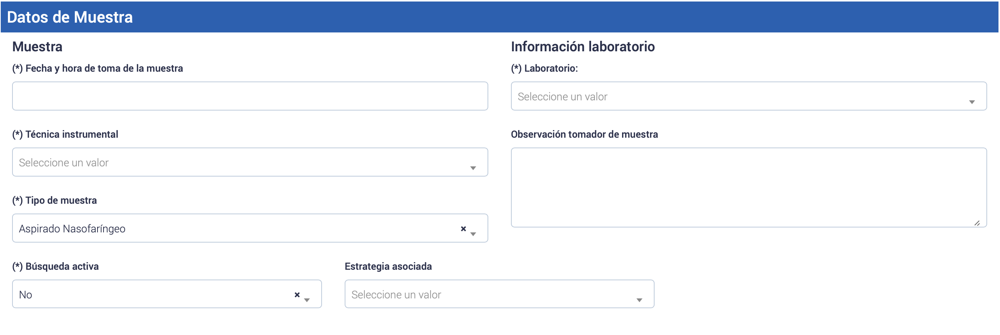
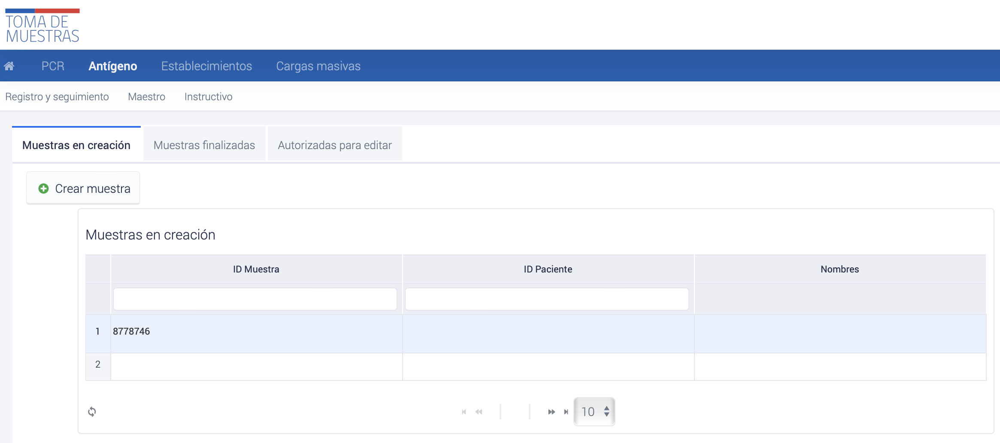
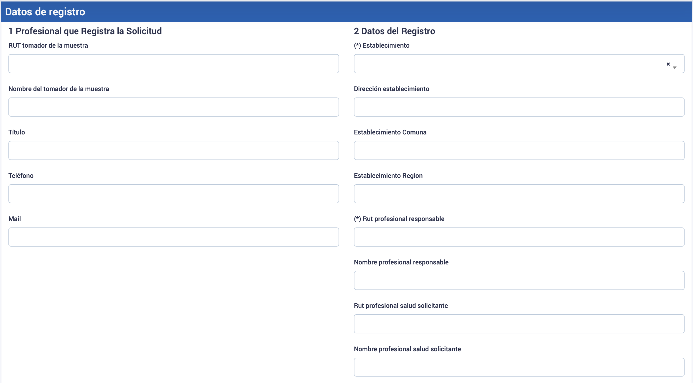
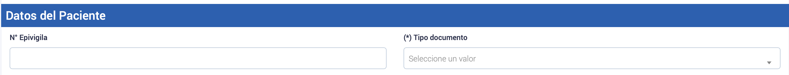
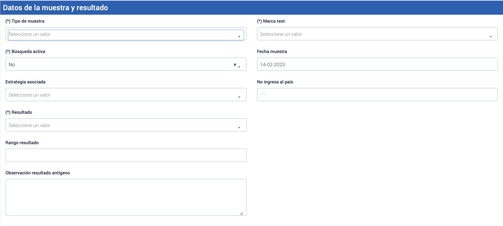
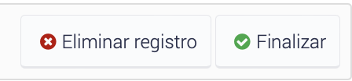

Registro de muestras biologicas: Profesional tomador de muestra
Tabla de contenido
- Instructivo de uso de la plataforma de toma de muestras
- Creación de muestra PCR via interfaz web
- Creación y resultado de Muestras AG via interfaz web
- Carga masiva de muestras y resultado de Test de antígeno
- Descarga de datos maestros - Antigenos
- Edición de Muestras
- Eliminación de muestras en PNTM
Instructivo de uso de la plataforma de toma de muestras
Este instructivo tiene como objetivo guiar a los profesionales de la salud autorizados a realizar el proceso de toma de muestra a través de la plataforma de toma de muestras del Ministerio de Salud de Chile. A continuación se detallan los pasos para el ingreso y uso de la plataforma.
Ingreso a la plataforma
Para ingresar a la plataforma, los profesionales deben contar con autorización y estar previamente identificados y cargados en la plataforma a través de la [[Creación de usuarios - Profesional tomador de muestra]]. Una vez que cuenten con esta autorización, podrán ingresar a la plataforma desde cualquier computador o dispositivo móvil con conexión a internet a través del sitio web tomademuestras.minsal.cl.
Para ingresar a la plataforma, los usuarios deben ingresar su RUN sin puntos, guion ni dígito verificador. La contraseña de ingreso será su número de registro en la SIS. Para resguardar la seguridad del sistema, esta contraseña deberá ser modificada inmediatamente en el primer ingreso a la plataforma, estableciendo así su propia clave de seguridad que debe contener al menos 4 dígitos.
Registro de correo electrónico
Durante el primer ingreso a la plataforma, cada profesional de toma de muestra deberá registrar su correo electrónico. Esto permitirá la recuperación autogestionada de su clave de PNTM en caso de olvido. Para esto, el usuario debe ingresar en la esquina superior derecha donde aparece su nombre, luego en “Gestión de cuenta”, y en la parte izquierda de la pantalla seleccionar “Mis datos” para ingresar su correo electrónico en la casilla destinada para este fin.
Identificación de establecimientos
Durante el primer ingreso a la plataforma, además de cambiar la contraseña, cada profesional de toma de muestra deberá identificar el o los establecimientos de salud en los que ejerce funciones. Para esto, la plataforma dispone de una lista preestablecida de los establecimientos de salud en el país.
Para agregar uno o más establecimientos a la lista, el usuario debe hacer click en la pestaña “Establecimientos” del menú, luego en “Administrar” y presionar el botón “+ Establecimiento”. Es importante destacar que cada profesional deberá asociarse al establecimiento donde efectivamente se desempeña.
En el listado aparecerá una nueva casilla vacía en color celeste, haga click sobre ella y en la parte baja del menú se desplegará un listado de los establecimientos públicos y privados. Seleccione el que desee incorporar a su lista y haga click sobre él. Para confirmar su selección, debe hacer click en la flecha de actualización que está bajo el listado.
En el caso de querer borrar un establecimiento, debe seleccionarlo y presionar el botón “x Eliminar”. Para confirmar la eliminación, presione “Aceptar” y vuelva a actualizar la lista.
Creación de muestra PCR via interfaz web
Para crear muestras utilizando la interfaz de usuario, se seguir el siguiente proceso:
- Acceder al módulo de PCR en el menú de opciones.
- Seleccionar Registro dentro del submenú correspondiente.
- Hacer clic en el botón Crear registro. De esta manera, podrás continuar con el proceso de creación de muestras.

Imagen de referencia para la creacion de muestras en la plataforma toma de muestras

Imagen del boton “Crear registro”
Después de hacer clic en el botón “Crear registro”, se abrirá un formulario donde se debe rellenar los campos solicitados con la información correspondiente de cada muestra que deseas crear.
Campos del formulario: Creacion de muestra
Es importante asegurarse de que se llenen todos los campos obligatorios, que están identificados con un asterisco (*).
Datos del profesional
 Imagen de referencia del formulario: Datos de registro
Imagen de referencia del formulario: Datos de registro
Profesional Tomador de muestra Completar los datos del profesional que está registrando la solicitud, como su nombre, establecimiento de trabajo. Si el profesional que está registrando la solicitud de toma de muestra trabaja en más de un establecimiento, debe indicar desde cuál de estos está realizando el procedimiento en el formulario correspondiente.
Profesional responsable Ingresar los datos del profesional que solicita la toma de la muestra, como su RUN (sin punto y con guión) y cualquier otra información necesaria.
Médico Solicitante
Datos del paciente
 Imagen de referencia del formulario: Datos del paciente
Imagen de referencia del formulario: Datos del paciente
N° Epivigila En caso de que se trate de un caso notificado, se debe completar el número de Epivigila.
Información del paciente Registrar los datos del paciente, su nombre completo, fecha de nacimiento, número de RUN o pasaporte y otros datos relevantes.
El botón Obtener datos del paciente permite que el sistema autocomplete la información disponible en las bases de datos correspondientes. Sin embargo, es importante que el profesional verifique todos estos datos directamente con el paciente.
Datos de Muestra
 Imagen de referencia del formulario: Datos de muestra
Muestra Seleccionar la fecha y hora de la toma de muestra, así como el tipo de muestra obtenida y el laboratorio de destino. Operativos BAC, seleccionar “SI” si la muestra se tomó en un operativo BAC y “NO” si se tomó en un centro asistencial regular.
Información laboratorio Seleccionar el laboratorio de destino al que se enviará la muestra. Este laboratorio de destino es establecido previamente por cada Servicio de Salud, y debe ser conocido por cada dirección de Centro Asistencial y sus funcionarios
Enviar muestra al laboratorio
![[Pasted image 20230214153430.png]]label Imagen de referencia del formulario: Botones de envio de muestra al laboratorio
Verificar que toda la información sea correcta y completa antes de enviar la solicitud de toma de muestra. Una vez que se hayan completado todos los campos necesarios, hacer clic en el botón “Enviar muestra al laboratorio”.
Creación y resultado de Muestras AG via interfaz web
Para crear muestras utilizando la interfaz de usuario, se seguir el siguiente proceso:
- Acceder al módulo de Antígeno en el menú de opciones.
- Seleccionar Registro y seguimiento dentro del submenú correspondiente.
- Hacer clic en el botón Crear muestra. De esta manera, podrás continuar con el proceso de creación de muestras.
- 
Imagen de referencia para la creacion de muestras de Antigeno en la plataforma toma de muestras
Imagen del boton “Crear registro”
Después de hacer clic en el botón “Crear registro”, se creará un id de muestra, el cual si se hace click se abrirá un formulario donde se debe rellenar los campos solicitados con la información correspondiente de cada muestra que deseas crear.
Campos del formulario: Creacion de muestra
Es importante asegurarse de que se llenen todos los campos obligatorios, que están identificados con un asterisco (*).
Datos de registro
 Imagen de referencia de la sección datos de registro del formulario
Profesional Tomador de muestra Completar los datos del profesional que está registrando la solicitud, como su nombre, establecimiento de trabajo. Si el profesional que está registrando la solicitud de toma de muestra trabaja en más de un establecimiento, debe indicar desde cuál de estos está realizando el procedimiento en el formulario correspondiente.
Profesional responsable Ingresar los datos del profesional que solicita la toma de la muestra, como su RUN (sin punto y con guión) y cualquier otra información necesaria.
Médico Solicitante
Datos del paciente

Imagen de referencia de la sección datos del Paciente del formulario de registro
N° Epivigila En caso de que se trate de un caso notificado, se debe completar el número
Tipo de documento Actualmente PNTM cuenta con los siguientes métodos de registro asociados al tipo de documento del paciente registrado en Antígenos: • Run • Pasaporte • Sin Documentación • DNI • Ficha Clínica • Recién Nacido
Para lo cual, en base al tipo de usuario a testear se detallan los posibles tipos de registro del tipo de documento y la jerarquía a utilizar en caso de no contar con algún tipo de documento
| Paciente | Identificador estándar | Alternativo | |:———————:|:———————-:|:——————————————————————————————————————–:| | Chilenos | RUN definitivo | Pasaporte: número; Ficha clínica: FC. + número; NO USAR RUN PROVISORIO | | Extranjeros | RUN definitivo | Pasaporte: número; DNI: DNI. + número (argentinos, peruanos, otros); Ficha clínica: FC. + número; NO USAR RUN PROVISORIO | | Recién nacidos | RUN definitivo | Comprobante de parto: CP. + número; Ficha clínica: FC. + número; NO USAR RUN PROVISORIO | | Otro tipo de paciente | Dinámico | Fichas clínicas: FC. + número; DNI: DNI. + número (argentinos, peruanos, otros); NO USAR RUN PROVISORIO | Tabla: tipos de documento por jerarquía de registro
- Ciudadanos chilenos: Utilizar siempre como primera opción el RUN, independiente que sean viajeros que vienen del extranjero.
- Extranjeros: Utilizar como primera opción el RUN definitivo (si lo posee). En segundo lugar, el número de pasaporte y como última opción la Identificación local del sujeto.
- Recién nacidos: Para realizar el registro de pacientes recién nacidos la regla corresponde a registrar como primera instancia el RUN, luego si el recién nacido no cuenta con este registro se procede a registrar el número de parto o ficha de recién nacido.
- Casos excepcionales: En que un caso no tenga ningún tipo de identificación y no entregue información al respecto, se podría utilizar, por ejemplo, el número del dato de atención de urgencia o ficha clínica, utilizando tipo documento = “Ficha Clínica”.
Información del paciente Registrar los datos del paciente, su nombre completo, fecha de nacimiento, número de RUN o pasaporte y otros datos relevantes.
En caso de ingresar un RUN en la sección de datos del paciente, éste debe ser ingresado sin puntos y con dígito verificador. El botón Obtener datos del paciente permite que el sistema autocomplete la información disponible en las bases de datos correspondientes. Sin embargo, es importante que el profesional verifique todos estos datos directamente con el paciente.
A continuación, se detallan cada uno de los datos que deben ser ingresados en la sección de datos de paciente
| Columna | Tipo de dato | Descripción | Restricciones | |:—————-:|:————:|:———————————————————————–:|:———————————————————:| | N Epivigila | Número | Id Epivigila | Opcional | | RUN o Pasaporte | Texto | Número de identificación del paciente | Obligatorio y válido en caso de ser RUN | | Tipo documento | Texto | RUN; PASAPORTE; DNI PAIS DE ORIGEN; SIN DOCUMENTACION; N° FICHA CLINICA | Obligatorio | | Nombres | Texto | Nombres del paciente | Obligatorio | | Apellido paterno | Texto | Apellido paterno del paciente | Obligatorio | | Apellido materno | Texto | Apellido Materno del paciente | Obligatorio, en caso no poseer indicar: “.” | | Sexo | Texto | Sexo del paciente | Obligatorio y solo podrá ser M, F, Intersex o Desconocido | | Dirección | Texto | Dirección del paciente | Obligatorio, Ejemplo: Avenida El Bosque. | | Teléfono | Número | Número de teléfono del paciente | Obligatorio | | Edad | Número | Edad del paciente | Obligatorio | | Comuna | Número | Comuna del paciente | Obligatorio, Debe ser una comuna valida del listado | | N Residencia | Texto | Numero de identificador de la calle/avenida | Obligatorio, Ejemplo: 130 | | Dpto. Residencia | Texto | Numero de identificador del dpto. casa del paciente | Opcional, Ejemplo: 22A | | Población, Villa | Texto | Población de residencia del paciente | Opcional, Ejemplo: Villa Magisterio | | Vía Residencia | Texto | Tipo de vía residencia del paciente | Obligatorio, Debe ser una vía valida del listado | | Paciente mail | Texto | Dirección de correo electrónico | Obligatorio | Tabla: Datos paciente requeridos
Datos de la muestra y resultado

Imagen de referencia de la sección Datos de la muestra y resultado del formulario de registro
El profesional deberá ingresar de forma obligatoria todos los campos indicados en asterisco, debiendo completar la información indicada en la siguiente tabla.
| Tipo de muestra | Texto | Descripción | Restricciones | |——————–|———-|————————————————|——————————————————————| | Tipo de muestra | Texto | Tórula nasofaríngea; Tórula Nasal | Obligatorio | | Búsqueda activa | Booleano | 0 = No; 1 = Si | Obligatorio | | Resultado | Texto | Positivo; Negativo; No concluyente | Obligatorio | | Marca Test | Texto | Marca de la prueba | Obligatorio, debe ser proveniente del listado disponible en PNTM | | Fecha muestra | Fecha | Fecha en que se crea la solicitud | Obligatorio | | No ingresa al país | Booleano | 0 = SI ingresa al país; 1 = NO ingresa al país | Obligatorio | Tabla: Datos de la muestra y resultado
Finalizar la creación del registro

Imagen de referencia de botones Eliminar registro y Finalizar de formulario de registro
Se recomienda verificar los datos luego de haber realizado la lectura e interpretación de los resultados, para así completar el registro haciendo click en Finalizar
Informe de resultado para test antigeno
Una vez finalizado, deberán subir en la plataforma y pinchar “INFORME DE RESULTADO PARA TEST ANTIGENO” para descargar informe.
Una vez pinchado se desplegará informe para que pueda ser impreso y firmado a mano alzada por profesional responsable del análisis de la muestra, esto para ser entregado al paciente.
Carga masiva de muestras y resultado de Test de antígeno
El siguiente instructivo explica los pasos necesarios para realizar cargas masivas de resultados de antígeno a través de la plataforma PNTM. Los usuarios podrán acceder a la sección de cargas masivas, descargar una planilla base con los campos solicitados, ingresar los datos requeridos y cargar el archivo de forma satisfactoria.
Instrucciones de la carga masiva
 Foto de referencia de la sección de cargas masivas por la interfaz
Foto de referencia de la sección de cargas masivas por la interfaz
- Es necesario acceder al módulo de “Cargas Masivas” dentro de la plataforma y seleccionar la sección “Antígeno”.
- En el botón desplegable “Estructura del archivo a cargar” se pueden visualizar los campos solicitados en la Planilla Base de toma de muestras, incluyendo el nombre de la columna, el tipo de dato, la descripción y las restricciones correspondientes.
- La Planilla Base se encuentra disponible para su descarga en formato Excel, a través del botón “Descargar base” ubicado debajo de la descripción de los campos.
- Para ingresar los datos correspondientes a cada muestra, es necesario incluir al menos todos los datos obligatorios en la fila 2 del archivo Excel, y guardar el archivo una vez completado.
- En la plataforma, se debe seleccionar el botón “Seleccionar archivo” y elegir el archivo deseado para luego hacer clic en “Subir archivo” y completar la carga de forma satisfactoria.
Estructura del archivo a cargar
La tabla que se presenta a continuación muestra la estructura de los datos que se deben rellenar en el archivo Excel. Cada columna representa un tipo de dato y la descripción que indica su función dentro del formulario. Además, se especifican las restricciones que se deben cumplir en cada columna para asegurar que la carga masiva sea procesada correctamente. Los usuarios deben incluir al menos todos los datos obligatorios descritos en la sección “Campos Solicitados”.
| Columna | Tipo de dato | Descripción | Restricciones | |——————————|————–|——————————————————————————————————————————————————————————————————————————————————————————————————————————————————–|———————————————————————————————————————————————————————————————————————————————————————————————————————————————————–| | run_pasaporte* | Varchar | Numero de identificacion del paciente | Obligatorio En caso de ser RUN debe ser valido | | paciente_tipodoc* | Varchar | tipo de dumento de identificacion del paciente Ejemplo: RUN PASAPORTE DNI PAIS DE ORIGEN SIN DOCUMENTACION N° FICHA CLINICA | Obligatorio Debe estar dentro de los valores aceptados: 1. RUN: run_pasaporte 2. PASAPORTE: run_pasaporte y paciente_ext_paisorigen 3. DNI PAIS DE ORIGEN: run_pasaporte y paciente_ext_paisorigen 4. SIN DOCUMENTACION: No se debe asignar valor a run_pasaporte y paciente_ext_paisorigen 5. N° FICHA CLINICA: run_pasaporte y paciente_ext_paisorigen | | paciente_nombres* | Varchar | Nombres del paciente | Obligatorio | | paciente_ap_pat* | Varchar | Apellido paterno del paciente | Obligatorio | | paciente_ap_mat* | Varchar | Apellido Materno del paciente | Obligatorio | | paciente_direccion* | Varchar | Direccion del paciente | Obligatorio Ejemplo: Avenida El Bosque. | | paciente_telefono* | Numero | Numero de telefono del paciente | Obligatorio | | paciente_edad* | Date | Edad del paciente | Obligatorio | | paciente_comuna* | Numero | Codigo de la comuna del paciente | Obligatorio Debe ser una comuna valida del maestro | | paciente_numero_direccion* | Varchar | Numero de identificador de la calle/avenida | Obligatorio Ejemplo: 130 | | paciente_depto_direccion* | Varchar | Numero de identificador del dpto. casa del paciente | No obligatorio Ejemplo: 22A | | paciente_poblacion_villa* | Varchar | Población de residencia del paciente | Obligatorio Ejemplo: Talca | | paciente_via_direccion* | Varchar | tipo de via residencia del paciente | Obligatorio debe estar dentro del maestro via_dirección Ejemplo: 1 | | paciente_mail* | Varchar | Dirección de correo electrónico | Obligatorio | | paciente_ext_paisorigen* | Numero | Codigo del pais de origen del paciente | Obligatorio si paciente_tipodoc es igual a “PASAPORTE “, “DNI PAIS DE ORIGEN”, “N° FICHA CLINICA” o “SIN DOCUMENTACION” Debe ser un codigo valido del maestro paises | | rut_profesional_responsable* | Varchar | RUN del responable de la muestra | Obligatorio Debe existir en la base de profesionales | | rut_medico | Varchar | RUN del medico que solicita la muestra | Opcional | | cod_deis* | Varchar | Codigo DEIS del Establecimiento | Obligatorio Debe existir en el maestro cod_deis | | epivigila* | Varchar | Codigo epivigila | No obligatorio | | tipo_muestra* | Varchar | Tipo de muestra realizada Ejemplo: Tórula nasofaríngea Tórula nasal | Obligatorio Debe ser: Tórula nasofaríngea o Tórula nasal | | fecha_muestra_date* | Date | Fecha en que se crea la solicitud | Obligatorio | | busqueda_activa* | Boolean | Tipo de busqueda Valores: 0 = No 1 = Si | Obligatorio | | resultado* | Varchar | Valor del resultado de la muestra | Obligatorio Debe ser: Positivo, Negativo, No concluyente | | codigo_marca_test* | Varchar | Marca de la prueba | Obligatorio debe estar dentro del maestro marca_test | | no_ingresa_pais | Boolean | Marca que indica ingreso efectivo al país Valores: 0 = SI ingresa al país 1 = NO ingresa al país | No es Obligatorio | | estrategia | Texto | Indica la estrategia asociada a la muestra de antígeno Valores cuando busqueda activa es 1: BAC Punto de Entrada BAC Brotes BAC Autotest Valores cuando busqueda activa es 0: Sintomáticos Residencias Sanitarias Atención médica | No es Obligatorio | | subestrategia | Texto | Indica la subestrategia asociada a la muestra de antígeno con estrategia BAC Brotes Valores: BAC Escolar BAC ELEAM BAC Mejor Niñez/SENAME BAC Centros Penitenciarios BAC Laboral OAL/AD/Centros de Salud BAC centro de diálisis BAC entorno prioritario BAC otros hogares BAC recintos de FFAA BAC viviendas colectivas y campamentos BAC comunitarios | No es Obligatorio | | observacion_muestra | Varchar | Observación resultado antígeno | Opcional |
Errores en la carga masiva
La plataforma Nacional de Toma de Muestras detalla los posibles errores que pueden ser indicados por el sistema al momento de subir una planilla de carga masiva a la plataforma, así como los errores que no detectará el sistema pero que pueden afectar la calidad de la información. El objetivo es verificar estas condiciones para poder subir una planilla de carga masiva de forma correcta a la PNTM.
Errores indicados por el sistema
Los posibles errores que pueden ser indicados por el sistema al momento de subir una planilla de carga masiva a la plataforma son:
- Campo obligatorio en blanco: este error se presenta al dejar en blanco campos que son de carácter obligatorio, como el RUN_pasaporte.
- RUN Paciente Incorrecto: este error se presenta cuando la planilla posee algún RUN inválido. Cabe destacar que el RUN debe ser escrito sin puntos y con guion.
- Rut Profesional_sis o Rut_medico no existente en base de profesionales: este error se presenta al ingresar un rut en el campo rut_profesional o rut_medico que no se encuentre en la base de profesionales.
- Rut_medico en blanco: este error se presenta al dejar en blanco el campo rut_medico, ya que la plataforma fue diseñada en un principio para recibir muestras de antígenos de pacientes sintomáticos provenientes de alguna médica.
- Fecha diferente a la fecha actual: este error se presenta al ingresar una fecha de muestra diferente a la fecha actual.
- Campo no figura dentro del conjunto de datos: este error se presenta al ingresar información que no esté contenida dentro del maestro de datos. En dicho caso se indicará por pantalla el conjunto de datos aceptado.
Errores no indicados por el sistema
Los errores no indicados por el sistema son aquellos que pueden afectar directamente el tratamiento de los datos y la calidad de la información, por lo que es importante verificar dicha información antes de ser subida. Algunos ejemplos de estos errores son:
- Ingreso de código DEIS de otro establecimiento.
- Ingreso erróneo de resultado.
- Ingreso de RUN de otro paciente.
- Ingreso de ID de otra comuna.
- Ingreso de código EPIVIGILA erróneo.
- Ingreso erróneo de tipo de búsqueda (activa o no activa).
Excepciones
PNTM detalla algunas especificaciones a considerar en diversos campos obligatorios al momento de realizar una carga masiva en la plataforma en circunstancias excepcionales. Por ejemplo:
- Dirección o teléfono del paciente: en caso de que no se posea la dirección detallada del paciente debido a circunstancias en las cuales sea dificultoso poseer este tipo de información, se deberán considerar algunas indicaciones específicas dependiendo del resultado de la muestra.
- Pacientes menores de edad: en caso de que se trate de pacientes menores de edad, se debe ingresar el RUN del apoderado en el campo rut_medico.
- En caso de fallecimiento del paciente: si el paciente ha fallecido, se debe indicar en el campo estado_paciente la opción “Fallecido”.
- Muestras en contexto de pesquisa activa: en caso de que las muestras sean tomadas en el contexto de pesquisa
Descarga de datos maestros - Antigenos
Como una opción, se puede descargar el archivo de datos maestros desde la plataforma. Para ello, se debe acceder al módulo “Antígeno”, seleccionar la sección “Maestro” y descargar la información desde el botón “descargar todos los maestros”. El archivo descargado contendrá todos los datos maestros necesarios en formato Excel para ingresar la información de forma correcta en la planilla base.
A continuación se detalla la lista de los datos maestros disponibles en el archivo Excel descargado:
- Comunas: disponible para el campo paciente_comuna, indicando la columna id_comuna de la planilla maestro de datos.
- Sexo: disponible para el campo paciente_sexo, indicando la columna clave de la planilla maestro de datos.
- Establecimiento público: disponible para el campo cod_deis, indicando la columna cod_deis de la planilla maestro de datos.
- Establecimiento privado: disponible para el campo cod_deis, indicando la columna cod_deis de la planilla maestro de datos.
- Resultado antígeno: disponible para el campo resultado, indicando la columna resultado de la planilla maestro de datos.
- Tipo de documento antígeno: disponible para el campo tipo_pacientedoc, indicando la columna tipo_documento de la planilla maestro de datos.
- Via dirección: disponible para el campo paciente_via_direccion, indicando la columna tipo_documento de la planilla maestro de datos.
- Tipo de muestra antígeno: disponible para el campo tipo_muestra, indicando la columna tipo_muestra de la planilla maestro de datos.
- Marca de test: disponible para el campo codigo_marca_test, indicando la columna clave de la planilla maestro de datos.
Edición de Muestras
En caso de que se detecte un error de información al crear una muestra, se puede editar siempre y cuando esta no haya sido recepcionada por el laboratorio. Para ello, se debe buscar la muestra correspondiente en la plataforma y hacer click sobre ella, luego seleccionar el campo “Volver a Editar”.
La plataforma volverá al estado de creación de muestra donde se podrá editar la información. Es importante destacar que esta posibilidad de acción tiene un límite de 7 días desde la creación de la muestra y antes de que sea recepcionada por el laboratorio.
Transcurrido ese plazo y si la muestra no ha pasado al proceso analítico (recepción y entrega de resultados), la muestra será automáticamente eliminada del sistema para evitar inconsistencias en la información.
Eliminación de muestras en PNTM
La plataforma PNTM ha habilitado la opción de eliminar una muestra, pero solo después de haber cumplido su respectivo período legal de eliminación y previa autorización de la Mesa de Ayuda PNTM.
Período legal de eliminación de muestras
- Para muestras PCR, se permite la eliminación después de haber cumplido un período legal de 30 días.
- Para muestras de antígeno, se permite la eliminación después de haber cumplido un período legal de 1 día.
Autorización para eliminación de muestras
- La eliminación de las muestras solo es posible previa autorización de la Mesa de Ayuda PNTM.
- Para solicitar la autorización, se debe cumplir con las reglas de negocio de eliminación correspondientes.
- La autorización será concedida por Gestión de Información, y el usuario recibirá un aviso por correo electrónico.
Es importante tener en cuenta que la eliminación de las muestras debe realizarse con la mayor responsabilidad y rigurosidad, para garantizar la confiabilidad y trazabilidad de la información en la plataforma PNTM. Además, se recomienda realizar la eliminación de las muestras solo en casos excepcionales y cuando sea absolutamente necesario, ya que la eliminación de muestras puede tener un impacto en el seguimiento y la trazabilidad de los pacientes.